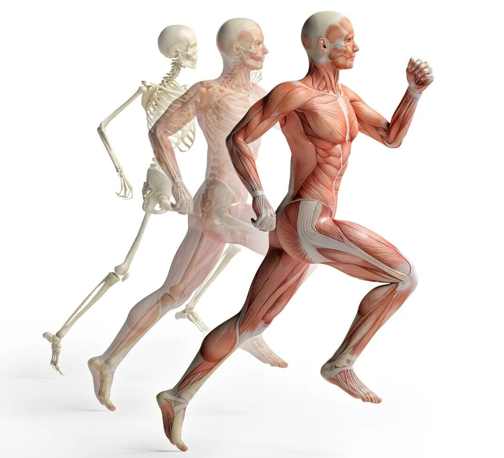
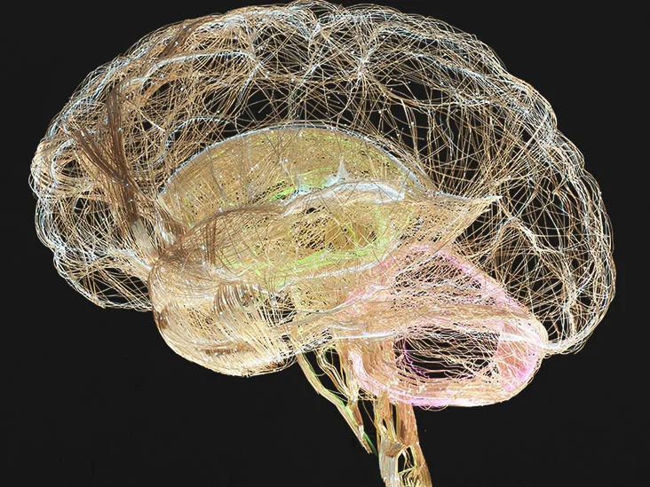

Effects of Walking on Organs and Systems
Cardiovascular System (Heart and Blood Vessels):
- The heart pumps blood throughout the body, delivering oxygen and nutrients to tissues and organs.
- Blood vessels, including arteries, veins, and capillaries, transport blood to and from the heart and
other body parts.

Respiratory System (Lungs and Airways):
- The lungs take in oxygen from the air we breathe and expel carbon dioxide, a waste product of
cellular metabolism.
- Airways, including the trachea, bronchi, and bronchioles, facilitate the exchange of gases between
the lungs and the environment.

Musculoskeletal System (Muscles and Bones):
- Skeletal muscles contract and relax to produce movement, allowing us to walk, run, and perform other
physical activities.
- Bones provide structural support and protection for internal organs, as well as serving as a site
for mineral storage and blood cell production.

Nervous System (Brain and Nerves):
- Walking stimulates the release of neurotransmitters and endorphins, chemicals in the brain that
promote mood elevation and reduce stress and anxiety.
- Regular physical activity, such as walking, can improve cognitive function, memory, and overall
mental well-being.

By engaging in regular physical activity like walking, you can positively impact these organs and systems,
promoting overall health and longevity.